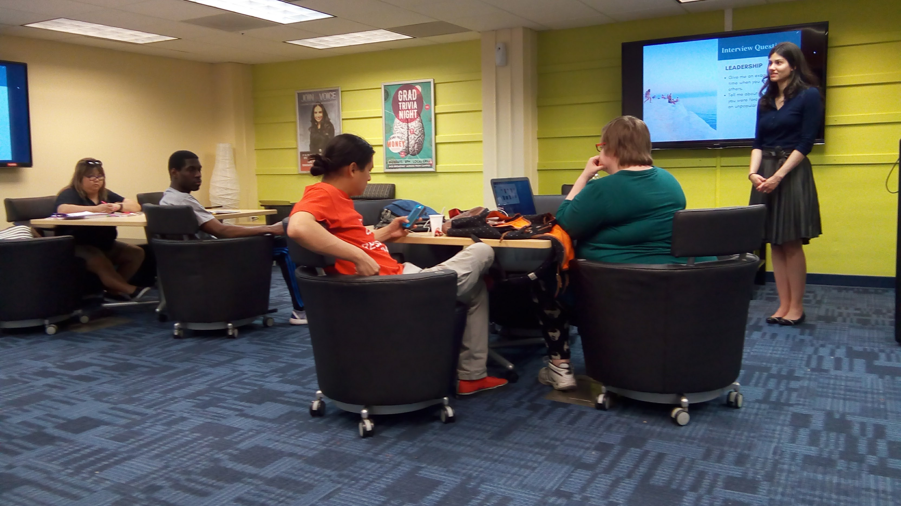
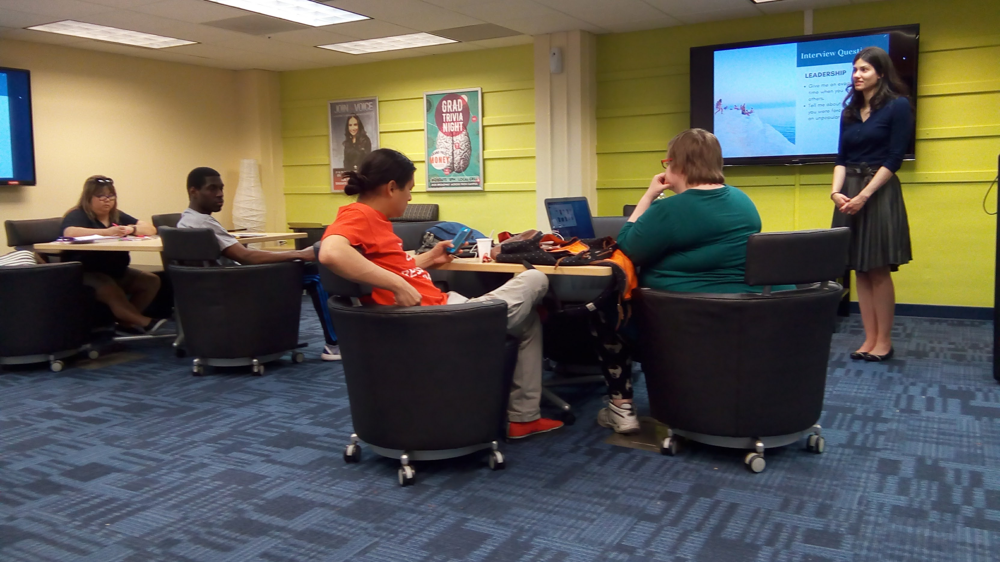
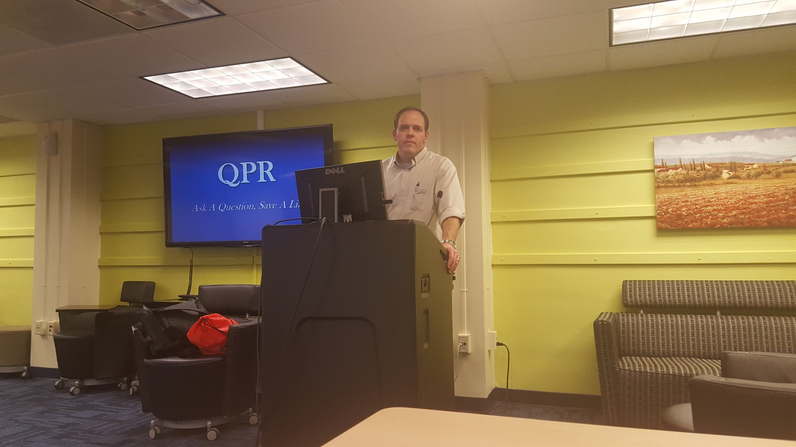
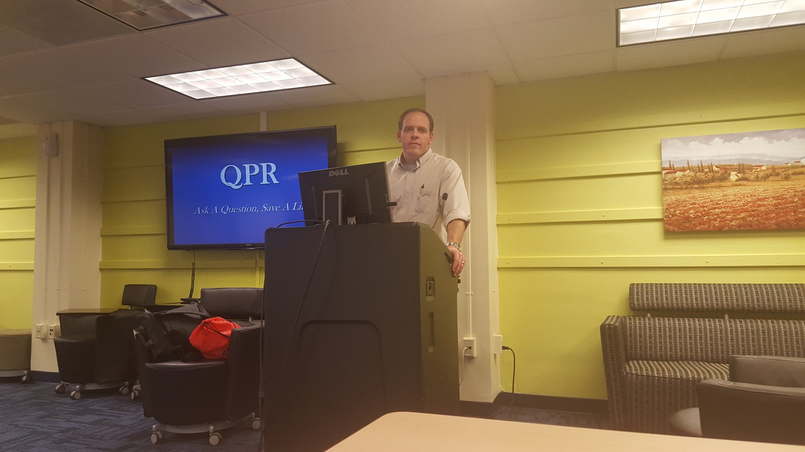

Student Development
Market Trends & Areas of Concern
Jacek Jońca-Jasiński, Ph.D.
Data Scientist at Nōscēmus
Founder of the Graduate Center &
the Office of Postdoctoral Affairs
at Texas Tech University
Power of Good Questions
What will future thinking look like?
What skills will the future demand?
How can we teach this future-oriented thinking?
How can we help develop skills of the future?
"All available evidence suggests that over 60% of new Ph.D.’s in science in the United States will not have careers in academic research, yet graduate training in science has followed the same basic format for almost 100 years, heavily focused on producing academic researchers. Given that so many students will not join that community, the system is failing to meet the needs of the majority of its students."
Leshner, A. I. (2015). Rethinking graduate education. Science, 349, p. 349.Party
like
it's
1999

"The American higher education system of today is like the American automobile industry of the 1970s."
"First, it offers a remarkable number of choices of the best products in the world at a reasonable cost. Second, it is not doing much about challenges that will require major adjustments if, 20 years from now, it wants to be able to make that same claim of superior choices at a reasonable cost."
Lamar Alexander, United State Senate, Committee on Health, Education, Labor and Pensions. Press release, September 9, 2013."For all the jobs that machines can now do [...] they still lack one distinctly human trait. They have no social skills. Yet skills like cooperation, empathy and flexibility have become increasingly vital in modern-day work. Occupations that require strong social skills have grown much more than others[...] And the only occupations that have shown consistent wage growth since 2000 require both cognitive and social skills."
Miller, C. C. (2015). Why what you learned in preschool is crucial at work. The New York Times.Deming, D. J. (2017). The growing importance of social skills in the labor market. The Quarterly Journal of Economics, 132, 1593-1640.
21st century skills
"21st century skills are tools that can be universally applied to enhance ways of thinking, learning, working and living in the world. The skills include critical thinking/reasoning, creativity/creative thinking, problem solving, metacognition, collaboration, communication and global citizenship."
Griffin, P., & Care, E. (Eds.). (2014). Assessment and teaching of 21st century skills: Methods and approach. Springer.21st century skills
"21st century skills also include literacies such as reading literacy, writing literacy, numeracy, information literacy, ICT [information and communications technologies] digital literacy, communication and can be described broadly as learning domains."
Griffin, P., & Care, E. (Eds.). (2014). Assessment and teaching of 21st century skills: Methods and approach. Springer.57%
57% of senior leaders today say soft skills are more important than hard skills.
n = 200, LinkedIn 2018 Workplace Learning Report, http://lnkd.in/learning201892%
92% of executives say that soft skills are equally important or more important than technical skills.
n = 200, LinkedIn 2018 Workplace Learning Report, http://lnkd.in/learning2018LinkedIn Workplace Learning Survey
200
200 Executives
400
400 Managers
2200
2200 Employees
1200
1200 Talent Developers
Most Importants Skills for Employers
Attributes Employers Seek on a Candidate’s Resume, Top 5
| Problem-solving skills | 82.9% |
| Ability to work in a team | 82.9% |
| Communication skills (written) | 80.3% |
| Leadership | 72.6% |
| Strong work ethic | 68.4% |
Attributes Employers Seek on a Candidate’s Resume, 6-10
| Analytical/quantitative skills | 67.5% |
| Communication skills (verbal) | 67.5% |
| Initiative | 67.5% |
| Detail-oriented | 64.1% |
| Flexibility/adaptability | 60.7% |
Attributes Employers Seek on a Candidate’s Resume, 11-15
| Technical skills | 59.8% |
| Interpersonal skills (relates well to others) | 54.7% |
| Computer skills | 48.7% |
| Organizational ability | 48.7% |
| Strategic planning skills | 39.3% |
Attributes Employers Seek on a Candidate’s Resume, 16-20
| Creativity | 29.1% |
| Friendly/outgoing personality | 27.4% |
| Tactfulness | 22.2% |
| Entrepreneurial skills/risk-taker | 19.7% |
| Fluency in a foreign language | 4.3% |
Why soft skills?
competency:
“a combination of skills, abilities, and knowledge needed to perform a specific task.”
Mental Health Crisis Among Graduate Students
In Berkeley Well-Being survey (n = 790) rates of depression among graduate students were staggering:
47% of Ph.D. students and 37% master's students scored as being depressed.
That is one out of every two doctoral students and one out of every three master's students.
| LIFE SATISFACTION | Coef. | SE | t | P>t | Beta |
|---|---|---|---|---|---|
|
Living conditions
|
0.18 | 0.03 | 6.33 | 0.00 | 0.20 |
|
Career prospects
|
0.15 | 0.03 | 5.19 | 0.00 | 0.19 |
|
Financial confidence
|
0.10 | 0.03 | 3.99 | 0.00 | 0.14 |
|
Academics
|
0.14 | 0.04 | 3.82 | 0.00 | 0.14 |
| Overall health | 0.22 | 0.05 | 4.08 | 0.00 | 0.14 |
|
Academic Engagement
|
0.08 | 0.03 | 3.18 | 0.00 | 0.10 |
|
Valued & included
|
0.09 | 0.03 | 2.91 | 0.00 | 0.10 |
| Advisor/mentor | 0.07 | 0.02 | 2.76 | 0.01 | 0.09 |
| Social support | 0.11 | 0.04 | 2.55 | 0.01 | 0.08 |
| DEPRESSION | Coef. | SE | t | P>|t| | Beta |
|---|---|---|---|---|---|
| Sleep | -0.58 | 0.09 | -6.12 | 0.00 | -0.18 |
| Overall health | -1.17 | 0.22 | -5.44 | 0.00 | -0.18 |
| Academic engagement | -0.54 | 0.10 | -5.46 | 0.00 | -0.16 |
| Social support | -0.98 | 0.18 | -5.58 | 0.00 | -0.16 |
| Career prospects | -0.48 | 0.11 | -4.25 | 0.00 | -0.15 |
| Financial confidence | -0.27 | 0.10 | -2.78 | 0.01 | -0.10 |
| Academics | -0.32 | 0.14 | -2.27 | 0.02 | -0.08 |
| Living conditions | -0.26 | 0.11 | -2.35 | 0.02 | -0.07 |

Personal competencies for a long and productive career
Career is a MARATHON, not a sprint
Stress management
Balanced nutrition
Physical exercise
Better health = longer productive lifespan
Longer productive lifespan = higher cumulative earning potential
Personal Financial Education
-
Debt management and personal financial education
-
Long-term financial planning, retirement planning
Average cumulative student loan balance
Average cumulative graduate loans
Average combined graduate and
undergraduate loan balances
Credit Card Debt vs. Student Loan Debt
The Big Picture
FY2016 Data
- Total student loan debt: $1.5 trillion
- Total U.S. borrowers with student loan debt > 44 million
- Student loan delinquency/default > 11%
Mean retirement account savings of families by age
Median retirement account savings of families by age
Basic Cybercompetencies
-
Personal Cybersecurity
-
Data Security & Backup
-
Scripting, Programming, and Automation
-
Reproducibility & Version Control
Cybersecurity
While you can't be 100% protected from cyber threats, there are several steps you can take to mitigate their risks.
It is a what-a-mole game
You are constatly under attack, you just don't know it.
Common Attack Vectors
Phishing, social engineering, mass data breaches
Physical access to your device (e.g., PC, cell, USB)
Unpatched software or IOT
Wifi sniffing
Third party app access
Malware/Spyware
Brute force and dictionary password attacks
Social Engineering
Phishing is the fraudulent attempt to obtain sensitive information such as usernames, passwords and credit card details by disguising oneself as a trustworthy entity in an electronic communication.
Phishing emails · Voice phishing · SMS phishing · In-session phishing
Practices that mitigate social engineering threats
Be skeptical
Use https://
Don't open links/attachements from unknown sources
Carefully examine links provided in email/SMS/webpages. Scrutinize where they lead.
Practices that mitigate social engineering threats cont'd
Carefully examine domains and seccurity certificates of sensitive webpages
Be careful with the information you provide over the phone
If you were affected by a mass data breacch (e.g. Equifax) credit freezze or credit lock, credit monitoring
2FA / hardware tokens
Physical access breaches
CONTENT
Mitagate physical access threat
All users on your computer have strong passwords
Avoid common passwords
e.g. 123456789, password, qwerty, 111111, abc123
Automatic Screen Locking
Encrypt HD/Flash e.g. FileVault (Mac), BitLocker (Windows)
Unpatched software or devices
Windows/Mac/Linux/Android/iOS security updates
Unpatched firmware on IOT devices, printers, etc.
Practices that mitigate social engineering threats
Install software updates
Apply firmware patches to IOT devices (printers, IP cameras, routers, hubs)
Close common ports (e.g. FTP/SSH/Telnet) on IOT devices
Unpatched software or devices
Use of public, unencrypted, or otherwise untrusted networks exposes you to a risk that someone may be intercepting your communnications.
Practices that mitigate risk from acceessing untrusted WIFI networks
Use a VPN or SSH tunnel
Use https:// (SSL encryption)
Unpatched software or devices
We often grant permissions to third-party applications to access, read, and often even write our data.
Facebook Cambridge Analytica
Practices that mitigate risk from third party applications
Do at least annual audits of apps you have including apps/addons in cloud platforms.
Delete unused accounts in addition to uninstalling apps.
Use password manager to keep track of your accounts.
The fewer acccounts you have, the less vulnerable you are.
Malware
Keyloggers, backdoors, popup ads, injected ads, cryptocurrency mines, spam bots, DDoS bots.
Practices that mitigate malware risks
Don't open untrusted attachements
Don't open untrusted links
Don't use untrusted USB devices
Each of your devices should have an antivirus software that is automatically updating and actively scanning for malware threats.
Brute force and dictionary password attacks
Use of short passwords or common passwords makes it easier for attackers to breach them.
Password guidelines
Use a password manager (e.g. LastPass, OnePass, Dashlane) to generate, store, and audit passwords.
Use a unique passowrd for each of your accounts
Preferably password that is a random string consisting of 16+ characters
Password should include uppercase, lowercase, numbers, and where permitted special characters (e.g. $, #, !, etc.)
Change passwords at least annually. Some say every 90 days.
Use 2-factor authentication (2FA) for all sites that offer it. 2FA adds an additional layer of protection in addition to passwords.
Graduate Center
“I enjoy my work a lot. A lot of my stress comes from loneliness.” "When students don’t feel a sense of belonging within the academic community—particularly with fellow students and faculty advisors—their mental health and academic work may suffer.”
-
Nexus for graduate life, place where you feel you belong.
-
Grew from zero visits in 2013 to 32000 in 2018.
-
Grew programming from 4 to over 200 events a year.
What do we do at the Graduate Center to address needs & fears of our students?
( select examples )
Career anxiety & Career Preparation
“The largest source of anxiety for me is my job outlook.
It is tremendously uncertain and thus fear-inducing.”
-
At least one in-house hosted professional or career development event each week
-
Cross-listing of relevant professional development events hosted by our partners
-
Free LinkedIn Headshot Service
 

Social support
“I live on my own for the first time and it is very lonely. I wish there were more exciting ways to meet other grad students.”
-
Social events hosted at least twice a month
-
Graduate Assembly
-
Never Give Up referral service
-
Graduate groups (Dissertation writing, Walking Group, Peer Support Group, and more)


Wellness & Health Promotion
-
Wellness Day hosted twice a semester
-
Time management & stress management workshops
-
Food pantry & nutritional education
-
Registered Dietitian lead workshops
-
Mental health awareness campaign & task force
-
Student Health Services presentations
 

Academic & research skills help
-
Statistical Consulting Service
-
Research Assistance Service
-
Low-cost Research Poster Printing Service
-
Free Research Strategies Training Program & "Certificate"
-
Workshops


Financial Skills
-
Tax preparation help sessions
-
Workshops hosted by Personal Financial Planning program
-
Self-funded (fund-raised) Grants in Aid program
-
Referrals to Raider Red Assistance Program and Red2Black Personal Financial Couching